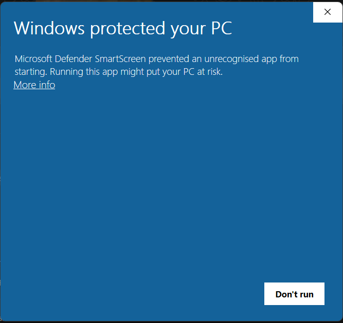
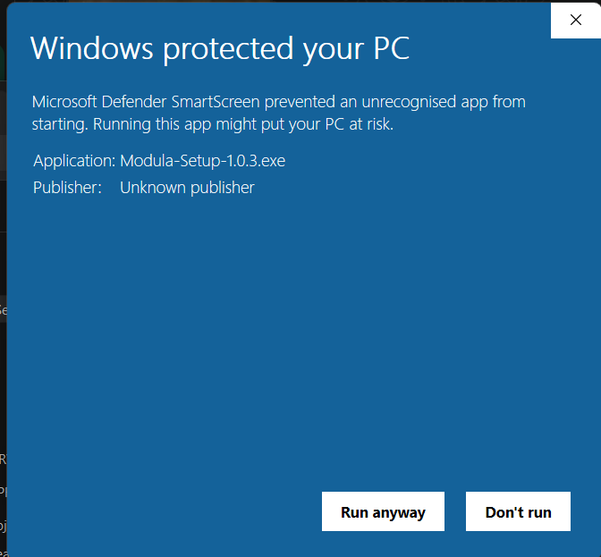
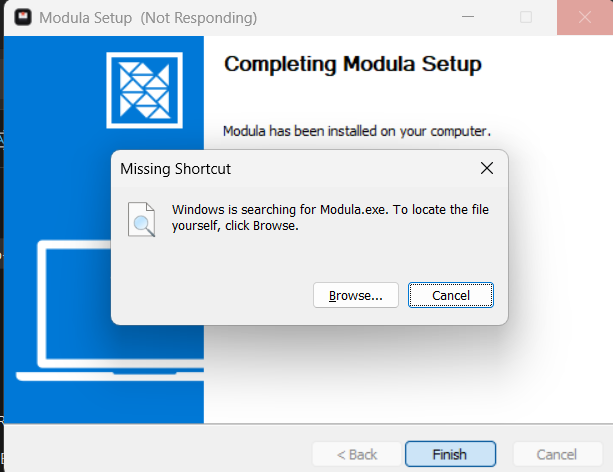

Modula is a distraction-free desktop app that connects to your university Canvas with a single API token. Auto-sync lecture slides, download full modules, and archive assignment templates offline.
Designed specifically for university students who need fast, offline, and organized access to lecture materials.
Modula runs silent background checks to detect when professors upload updated lecture slides, assignment briefs, or new modules. You receive instant desktop notifications with red NEW tags.
Download the entire semester's course materials with one click, or grab an individual week's module with organized numbered folders.
Scans assignment descriptions to automatically download embedded Word templates, PDF rubrics, and LaTeX guides straight to your computer.
Supports all Canvas instances: Birmingham, Oxford, Manchester, Melbourne, Canvas Free, or any custom institutional domain.
Your Canvas API token is stored securely on your local device. Modula never sends your credentials, course titles, or files to any external server. All communication happens strictly between your machine and your university.
No complex configuration. Connect with your Canvas account and start studying offline.
Log in to your university Canvas web portal, click Account in the sidebar → Settings → scroll to Approved Integrations and click + New Access Token.
Open Modula, paste your university's Canvas URL (e.g. https://canvas.bham.ac.uk) and your access token into the Settings modal, then click Save & Connect.
~/Downloads/Modula).All your enrolled courses and modules appear instantly. Click Download Module or Download All Modules to save everything locally for exam prep.
Why macOS and Windows display first-time security warnings, how to bypass them in seconds, and third-party cryptographic proof that Modula is 100% clean.
Commercial operating systems require developers to purchase expensive corporate certificates to eliminate automated security prompts: Apple charges $99 every single year for an Apple Developer Program subscription, while Microsoft requires hardware-token EV Code Signing certificates that cost $300 to $500+ every year.
Modula is an independent, 100% free tool built by university students for university students to make Canvas course downloads frictionless. As an independent student developer, I refuse to place paywalls, collect user data, or pay hundreds of dollars every year to commercial tech giants for corporate certificates.
Google Cloud’s VirusTotal inspected the Modula release packages against the world's leading security scanners. Zero viruses, zero trojans, zero keyloggers, and zero malware were detected.
87def4599758ebd976d14031d34b31a586cc2df034ef739c3d34340456a5d93f
c393716b6636e8af35fb67bc7ae1efaebdec0b2b3744229e7ad8fe3819e5c244
bfe5612eec9c94c5f57640057189c5d6e507c640d68b7174e62e7b1c5170610a
When launching the installer or portable executable for the first time, Windows displays a blue prompt: "Windows protected your PC — Microsoft Defender SmartScreen prevented an unrecognised app from starting."


If the installer reached the end and showed "Missing Shortcut: Windows is searching for Modula.exe", got stuck in a loop, or the installed folder only contained Uninstall Modula:
Download and use the Standalone Portable Edition. It requires NO installation wizard, does not write to AppData, creates no broken shortcuts, and runs immediately.
Download Portable (.exe)
Windows Defender's real-time heuristic scanner occasionally quarantines newly extracted unsigned .exe files during installation before the shortcut can link to it.

When downloading applications outside the Apple App Store without a $99/year Apple Developer membership, macOS places the downloaded app into quarantine and shows "Modula is damaged and can't be opened".
Open Terminal (Press Cmd + Space, type Terminal, press Enter) and paste this one-time command:
xattr -cr /Applications/Modula.app
Free, lightweight, and cross-platform. Choose your operating system below.
Windows 11 and Windows 10 (64-bit x64)
Download Installer (97.7 MB) Portable Edition (No Install — 97.4 MB)